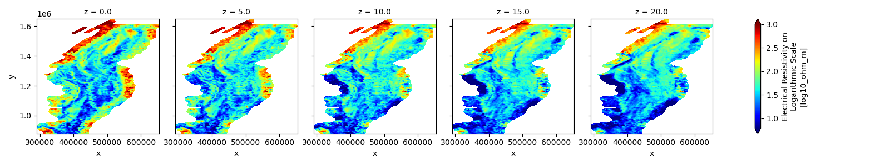
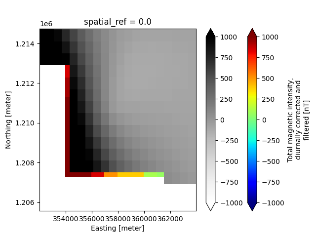

Note
Go to the end to download the full example code
GeoTIFFs to NetCDF
In this example, we demonstrates the workflow for creating a GS file from the GeoTIFF (.tif/.tiff) file format. This includes adding individual TIF files as single 2-D variables, as well as how to create a 3-D variable by stacking multiple TIF files along a specified dimension.
Additionally, this example shows how to handle Raster data that have differing x-y grids. Specifically, this example creates the following Raster datasets:
- Raster Dataset #1
1a. 2-D magnetic grid, original x-y discretization (600 m cell size)
- Raster Dataset #2
2a. 2-D magnetic grid, aligned to match the x-y dimensions of the resistivity layers (1000 m cell size)
2b. 3-D resistivity grid
Dataset References:
Minsley, B.J., James, S.R., Bedrosian, P.A., Pace, M.D., Hoogenboom, B.E., and Burton, B.L., 2021, Airborne electromagnetic, magnetic, and radiometric survey of the Mississippi Alluvial Plain, November 2019 - March 2020: U.S. Geological Survey data release, https://doi.org/10.5066/P9E44CTQ.
James, S.R., and Minsley, B.J., 2021, Combined results and derivative products of hydrogeologic structure and properties from airborne electromagnetic surveys in the Mississippi Alluvial Plain: U.S. Geological Survey data release, https://doi.org/10.5066/P9382RCI.
import matplotlib.pyplot as plt
from os.path import join
from gspy import Survey
from pprint import pprint
Convert data from GeoTIFF to NetCDF
Initialize the Survey
# Path to example files
data_path = "..//..//supplemental//region//MAP"
# Survey metadata file
metadata = join(data_path, "data//Tempest_survey_md.json")
# Establish the Survey
survey = Survey(metadata)
Create the First Raster Dataset
# Import 2-D magnetic data, discretized on 600 m x 600 m grid
# Define input metadata file (which contains the TIF filename linked with desired variable name)
d_supp1 = join(data_path, 'data//Tempest_raster_md.json')
# Read data and format as Raster class object
survey.add_raster(metadata_file=d_supp1)
Create the Second Raster Dataset
# Import both 3-D resistivity and 2-D magnetic data, aligned onto a common 1000 m x 1000 m grid
# Define input metadata file (which contains the TIF filenames linked with desired variable names)
d_supp2 = join(data_path, 'data//Tempest_rasters_md.json')
# Read data and format as Raster class object
survey.add_raster(metadata_file=d_supp2)
Save to NetCDF file
d_out = join(data_path, 'data//tifs.nc')
survey.write_netcdf(d_out)
Reading back in the GS NetCDF file
new_survey = Survey.open_netcdf(d_out)
Plotting
# Make a map-view plot of a specific data variable, using Xarray's plotter
# In this case, we slice the 3-D resistivity variable along the depth dimension
new_survey.raster[1]['resistivity'].plot(col='z', vmax=3, cmap='jet')
# Make a map-view plot comparing the different x-y discretization of the two magnetic variables, using Xarray's plotter
plt.figure()
ax=plt.gca()
new_survey.raster[1]['magnetic_tmi'].plot(ax=ax, vmin=-1000, vmax=1000, cmap='jet')
new_survey.raster[0]['magnetic_tmi'].plot(ax=ax, vmin=-1000, vmax=1000, cmap='Greys', cbar_kwargs={'label': ''})
plt.ylim([1.20556e6, 1.21476e6])
plt.xlim([3.5201e5, 3.6396e5])
plt.show()
print(new_survey.raster[0]['magnetic_tmi'])
- 
- 
<xarray.DataArray 'magnetic_tmi' (y: 1212, x: 599)>
[725988 values with dtype=float64]
Coordinates:
spatial_ref float64 ...
* x (x) float64 2.928e+05 2.934e+05 2.94e+05 ... 6.51e+05 6.516e+05
* y (y) float64 1.607e+06 1.606e+06 ... 8.808e+05 8.802e+05
Attributes:
standard_name: total_magnetic_intensity
null_value: 1.70141e+38
units: nT
grid_mapping: spatial_ref
valid_range: [-17504.6640625 11490.32324219]
long_name: Total magnetic intensity, diurnally corrected and filtered
Total running time of the script: (0 minutes 1.643 seconds)